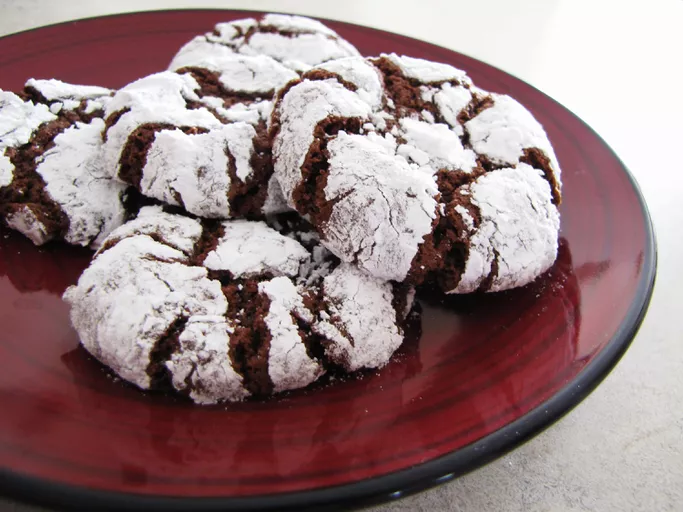

Chocolate Crinkle Cookies

Description
Chocolate crinkle cookies have become a holiday staple, but they're also great any time of year.
They're cake-like cookies made with cocoa powder, vegetable oil,
and a handful of other ingredients.
They're the perfect cookie for brownie cake lovers
because of their rich, fudgy flavor and texture.
Ingredients
- 2 cups white sugar
- 1 cup unsweetened cocoa powder
- ½ cup vegetable oi
- 4 large eggs
- 2 teaspoons vanilla extract
- 2 cups all-purpose flour
- 2 teaspoons baking powder
- ½ teaspoon salt
- ½ cup confectioners' sugar
Directions
- Gather ingredients.
- Mix sugar, cocoa, and oil together in a medium bowl. Beat in eggs, one at a time, until combined.
Stir in vanilla.
- Combine flour, baking powder, and salt in another bowl. Gradually stir flour mixture
into the cocoa mixture until thoroughly mixed. Cover dough and refrigerate for at least 4 hours.
- Preheat the oven to 350 degrees F (175 degrees C). Line two cookie sheets with parchment paper.
- Roll or scoop chilled dough into 1-inch balls. Coat each ball in confectioners' sugar and place
1 inch apart on the prepared cookie sheets.
- Bake in the preheated oven for 10 to 12 minutes. Let stand on the cookie sheet for a few minutes
before transferring to wire racks to cool.
- Repeat Steps 4 and 5 to make remaining batches.